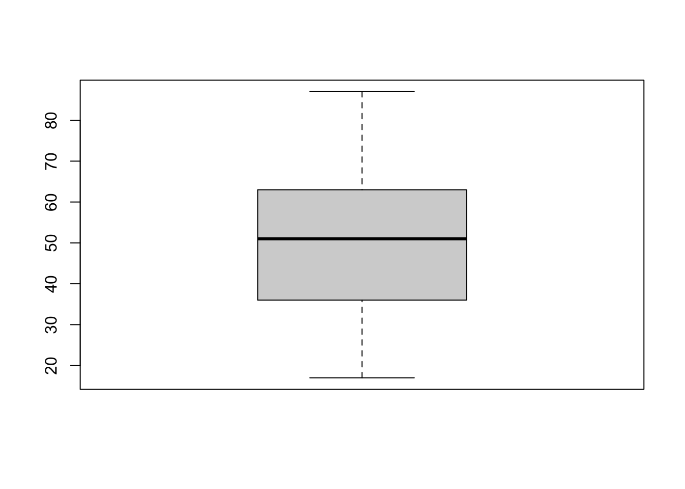

# load the glbwarm data set
glbwarm <- read.csv("data/glbwarm.csv")EDA
Learning Outcomes
At the end of this section you will understand the following concepts, know the R functions to calculate/create the following statistical measures/plots, and be able to interpret them:
- Sample size and data set preview
- Frequency distributions of a variable
- Histograms, boxplots, bar plots
- Measures of central tendency and measures of spread
- Standardization and z-scores
Sample size and data preview
When starting to work with a new data set, the first step is to describe its general characteristics and those of its variables. This includes:
- describing the number of cases in the data set (the sample size)
- examining the types of variables
- and computing descriptive statistics such as the mean and standard deviation.
A research report typically contains information on the data set and variables.
We already learned how to perform some of these operations by using the following functions:
- dim() to find the number of rows of the data set, which corresponds to the number of cases (sample size) in a common and well structured data set.
- str() or glimpse() (in the package tidiverse) to look at the types of variables included in the data set
- head() to see a preview of the data set
- View() to view the data set in a separate window (warning: not reccomended if the data set is huge, since it can freeze your computer)
Let’s see an example, using the global warming study data set (glbwarm).
It’s a well-organized data set. Each line describes a case. The sample size can therefore be calculated by counting the number of rows.
dim(glbwarm)[1] 815 7The sample size is 815 (n = 815, where n stands for the number of cases included in the sample).
We can also see that there are 7 variables. We can now look at their type.
library(tidyverse)── Attaching packages ─────────────────────────────────────── tidyverse 1.3.2 ──
✔ ggplot2 3.4.0 ✔ purrr 1.0.1
✔ tibble 3.1.8 ✔ dplyr 1.1.0
✔ tidyr 1.3.0 ✔ stringr 1.5.0
✔ readr 2.1.3 ✔ forcats 1.0.0
── Conflicts ────────────────────────────────────────── tidyverse_conflicts() ──
✖ dplyr::filter() masks stats::filter()
✖ dplyr::lag() masks stats::lag()glimpse(glbwarm)Rows: 815
Columns: 7
$ govact <dbl> 3.6, 5.0, 6.6, 1.0, 4.0, 7.0, 6.8, 5.6, 6.0, 2.6, 1.4, 5.6, 7…
$ posemot <dbl> 3.67, 2.00, 2.33, 5.00, 2.33, 1.00, 2.33, 4.00, 5.00, 5.00, 1…
$ negemot <dbl> 4.67, 2.33, 3.67, 5.00, 1.67, 6.00, 4.00, 5.33, 6.00, 2.00, 1…
$ ideology <int> 6, 2, 1, 1, 4, 3, 4, 5, 4, 7, 6, 4, 2, 4, 5, 2, 6, 4, 2, 4, 4…
$ age <int> 61, 55, 85, 59, 22, 34, 47, 65, 50, 60, 71, 60, 71, 59, 32, 3…
$ sex <int> 0, 0, 1, 0, 1, 0, 1, 1, 1, 1, 1, 0, 1, 0, 1, 1, 1, 0, 0, 0, 0…
$ partyid <int> 2, 1, 1, 1, 1, 2, 1, 1, 2, 3, 2, 1, 1, 1, 1, 1, 2, 3, 1, 3, 2…The glimpse function also includes a preview of the data set, but a clearer preview is displayd with head():
head(glbwarm) govact posemot negemot ideology age sex partyid
1 3.6 3.67 4.67 6 61 0 2
2 5.0 2.00 2.33 2 55 0 1
3 6.6 2.33 3.67 1 85 1 1
4 1.0 5.00 5.00 1 59 0 1
5 4.0 2.33 1.67 4 22 1 1
6 7.0 1.00 6.00 3 34 0 2Measure of central tendency
Descriptive statistics are used to describe and summarize variables of a data set.
Typically, there are two general types of statistics that are used to describe data: Measures of central tendency and Measures of spread.
Measures of central tendency include: - Mode: the most frequent score in our data set - Median: the middle score for a set of data that has been arranged in order of magnitude - Mean: the sum of all the values in the data set divided by the number of values in the data set.
A clear description of the different measures can be found here.
The Mean
In this course we’ll focus on the mean (or average). This is the most popular and well known measure of central tendency, and it is used in linear regression modeling.
The mean itself is essentially a model of a data set. One of its important properties is that it minimises error in the prediction of any one value in the data set. In other terms, lacking better predictors, the mean is the best predictor of a value in the data set.
In R, you can calculate the mean of a variable by the function mean() (reminder: to access a variable in the data set, that is to say, a column of a data.frame, use the dollar sign):
mean(glbwarm$age)[1] 49.5362The mean age of people in the sample is 49.5362. To round off decimals, you can add the function round(). It takes two main arguments: a number (or a function that returns a number) to be rounded off, and an integer that tells R how many decimals you want to include.
round(mean(glbwarm$age), 2)[1] 49.54This is equivalent to creating an object mean_age representing the output of the function mean (i.e., the mean age), and then rounding it off.
mean_age <- mean(glbwarm$age)
round(mean_age, 2)[1] 49.54Frequency distributions
The frequency distribution of a variable is an overview of its values and the number of times they occur (i.e., their frequency).
The distributions can be continuous or discrete, depending on the type of variable. The distribution of a variable is summarized by the five-number summary, and graphically, by histograms and box plots (for continuous or discrete variables) and bar charts (for categorical variables).
Discrete variables have discrete distributions. Such a variable can only take specific values. Count data (non-negative integers), are an example: for instance, the number of friends on Facebook. In the glbwarm data set, the variable ideology is measured on a discrete scale ranging from 1 to 7.
Discrete variables can also represent categorical data. Categorical data expresses qualitative dimensions of a phenomenon. For instance, city names (Vienna, London, Verona), or ordered categorical values (low, medium, high). Categorical data can be represented by numbers, but they should not be conceived as mathematical objects, but as “names” or ordered categories. Categorical variables that can take on only two values are called dichotomous variables (e.g., sex, if you only differentiate between males and females). In the data set glbwarm, the variable “sex” is represented as a dichotomous variable.
Continuous variables have continuous distributions. This kind of variable can assume one of an infinite (uncountable) number of different values. Continuous variables are represented by real numbers. Temperature or velocity are an example. In the data set glbwarm, the variable “govact” is represented as a continuous variable.
Five-Number Summary
data set
A numerical description of the distribution is provided by the function summary(), which gives the five-number summary.
summary(glbwarm$ideology) Min. 1st Qu. Median Mean 3rd Qu. Max.
1.000 3.000 4.000 4.083 5.000 7.000 The five-number summary includes the mean, the median, minimum and maximum values, the first and third quartiles. Quartiles are cut points dividing the range of values of the variable into four parts, or quarters, of more-or-less equal size (25%, 25%, 25%, 25%). The median is the value separating the lower 50% from the upper 50% of the distribution.
Boxplot
The same information of a five-number summary is graphically displayed by the boxplot, also called box-and-whisker plot. The “box” represent the 1st and 3rd quartile, the central line is the median, the “whiskers” represent the maximumn and minimum.
The points above and below the whiskers are outliers, data points that differ significantly from other observations. Since they are so different they are difficult to predict. Moreover, they can bias the estimates of a linear regression models.
# use the argument "main" to add a title
boxplot(glbwarm$govact, main = "Ideology")Histogram
Another way to show the distribution of a variable is by means of an histogram, using the function hist().
The function can be used to show the frequency distribution of values:
# use "main" tp change the title, and "xlab" to change the name of the x axis
hist(glbwarm$govact,
main = "GOVACT (GLBWARM data set)", xlab = "govact")
As well as the probability distribution:
# you can use the argument "col" to change the color
# to see the available colors, run the following command in the console: colors()
hist(glbwarm$govact, probability = TRUE,
main = "GOVACT (GLBWARM data set)", xlab = "govact",
col = "slategrey")
lines(density(glbwarm$govact, adjust = 2))
When dealing with continuous variables, may want to add a line to overlay a density curve on the histogram, to aproximate the shape of the distribution.
hist(glbwarm$govact, probability = TRUE,
main = "GOVACT (GLBWARM data set)", xlab = "govact",
col = "slategrey")
# this is to add a line of the "density"
# the argument "lwd" sets the width of the line
lines(density(glbwarm$govact),
col = "steelblue1",
lwd = 2)
# this is to add a more smoothed (simpler and more aproximated) density curve
# the argument "lty" sets the type of line
lines(density(glbwarm$govact, adjust = 2),
col = "lightblue",
lwd = 3,
lty = "dotted")Bar plot
Histograms and box plot are used to represent the distribution of numerical variables, such as continuous and discrete variables. For categorical variables, a bar graph is used in place.
For instance, the histogram of the dichotomous categorical variable “sex”, is not appropriate. It only takes on the values 0 and 1, but they are not numbers (0 = male, 1 = female) and there is nothing in between them (e.g., 0, 0.1, 0.2, …, 1).
hist(glbwarm$sex, main = "SEX (categorical dichotomous variable)", xlab = "sex")The appropriate way to represent the frequency distribution of categorical variables is the bar chart (or bar plot). The corresponding R function is barplot().
It takes as argument a table with the frequency for each of the modalities of the category (i.e., a table with the number of males and females in the sample). The function table() returns the frequency of the variable.
table(glbwarm$sex)
0 1
417 398 This function can be used as the main argument of the function barplot():
barplot(table(glbwarm$sex),
main = "Observations by SEX",
xlab = "0 = Male 1 = Female")
Measures of Spread
Measures of spread describe how similar or varied the set of observed values are for a particular variable. Measures of spread include the range, quartiles and the interquartile range, variance and standard deviation.
For example, the interquartile range is the difference between the third and first quartile and is represented by the size of the “box” in a boxplot.
boxplot(glbwarm$age)
Even more relevant are variance and standard deviation.
Variance
Variance (represented as \(s^2\) when computed on a sample, as in this case), is a measure of dispersion that quantifies how spread the values of a variable are from the mean (the average value of the variable), or in other terms, of how much they vary (“variance”).
The formula for variance is:
\[s^2 = \frac{\sum_{i=1}^{n} (x_i-\bar x)^2}{n-1}\]
Capital sigma \(\sum\) is the summation symbol, \((x_i-\bar x)\) is the deviation (i.e., the difference) of each value \(i\) of \(X\) from the mean of \(X\) (\(\bar x\), the mean or average of the variables), and \(n\) is the sample size. In R:
var(glbwarm$age)[1] 266.6937Standard Deviation
Standard deviation (represented as \(s\) when computed on a sample, as in this case) is a related, and more commonly used, measure of dispersion. A low standard deviation indicates that the values of a variable tend to be close to its average, while a high standard deviation indicates that the values are spread out over a wider range. It is the square root of the variance:
\[s = \sqrt \frac{\sum (x_i-\bar x)^2}{n-1}\]
In R:
sd(glbwarm$age)[1] 16.33076Standardization and z-scores
Besides measuring the spread of a variable, standard deviation is used for standardizing variables.
Standardization is a procedure that transforms the original data (“raw data”) in the so-called z-scores. Z-scores are are values expressed in standardized units by using the average and the standard deviation:
\[Z = \frac{x_i - \bar x}{s}\]
A way to think about standardization, is considering it as the interpretation of values relatively to their own distribution.
The average of a standardized variable is always zero, below-average values are negative and above-average values are positive.
In R, standarization is provided by the function scale().
zscores_age <- scale(glbwarm$age)hist(zscores_age)A classic example of the utility of z-scores typically goes like this. Suppose two sections of a statistics course are being taught. John is a student in section A and Mary is a student in section B. On the final exam for the course, John receives a raw score of 80 out of 100 (i.e., 80%). Mary, on the other hand, earns a score of 70 out of 100 (i.e., 70%).
At first glance, it may appear that John was more successful on his final exam. However, scores, considered absolutely, do not allow us a comparison of each student’s score relative to their class distributions. For instance, if the mean in John’s class was equal to 85% with a standard deviation of 2, John’s z-score is:
\[Z = \frac{x_i - \bar x}{\sigma} = \frac{80 - 85}{2} = -2.5\]
Suppose that in Mary’s class, the mean was equal to 65% also with a standard deviation of 2. Mary’s zscore is thus:
\[Z = \frac{x_i - \bar x}{\sigma} = \frac{70 - 65}{2} = 2.5\]
As we can see, relative to their particular distributions, Mary greatly outperformed John.
Z-scores are often used with reference to the standard normal distribution. In this case, 68%, 95%, and 99.7% of the values lie within one, two, and three standard deviations of the mean, respectively. It is considered statistically unlikely that a value is 2 standard deviations either side of the mean. We’ll encounter again the normal distribution and the 2 standard deviation threshold when we’ll take statistical inference into consideration.
Correlation and prediction
In the first section we used statistical measures and charts to describe variables. In this section we’ll learn to assess the relationships between two variables.
At the end of this unit you will understand the following concepts, be able to interpret them, and know the R functions to calculate and create the related statistical measures and plots:
- Pearson’s correlation
- Scatterplot
- Prediction
Correlation
data set
Correlation is a statistical relationship, whether causal or not, between two variables.
Two variables \(X\) and \(Y\) are said to be correlated when they show a systematic association, so that knowing the values of one variable enables the prediction of the values of the other.
Correlation analysis permits to identify this relationship and to quantify its strength.
Pearsons’ correlation coefficient (Pearsons’ R)
The Pearson’s product moment correlation, also known as Pearson’s r, is an important measure of correlation.
It is also the foundation of most of the linear regression methods discussed in this course. Indeed, it can be used to quantify the linear association (or relationship) between two quantitative variables, a quantitative and a dichotomous variable, as well as between two dichotomous variables.
In linear association, the direction and rate of change in one variable are constant with respect to changes in the other variable. For example, in a perfect linear association between two variables \(X\) and \(Y\), an increase of 1 point in \(X\) corresponds to an increase of 1 point in \(Y\).
A linear relationship describes a straight-line relationship between two variables.

Pearsons’ R and covariance
Pearson’s r is based on the formalization of the idea of calculating the ratio between the degree to which \(X\) and \(Y\) vary together, and the degree to which \(X\) and \(Y\) vary separately, in order to find how much “co-variation” they share.
\[r = \frac{degree-to-which-X-and-Y-vary-together}{degree-to-which-X-and-Y-vary-separately}\]
The idea of covariation is mathematically expressed by covariance (\(cov\)), which is at the heart of virtually all statistical methods. The Pearson’s \(r\) is a standardized measure of covariance.
Covariance is based on variance (\(s^2\)):
\[s^2 = \frac{\sum_{i=1}^{n} (x_i-\bar x)^2}{n-1}\]
More precisely, covariance is a measure of the joint variability of two variables, and is calculated as the product of the variance of the variables:
\[ cov = \frac{\sum_{i=1}^{n} (x_i-\bar x) (y_i-\bar y)}{n-1}\]
The covariance can be positive, negative, or equal to zero, and gives a measure of the linear correlation between variables.
So, why do we need Pearson’s r? Because covariance is a measure that depends on the unit of measurement of the variables, while it is preferable to have a standard measure, meaningful independently of each specific data set.
Standardizazion of covariance is obtained by dividing the covariance \(cov\) by the product of the standard deviations of the variables \(X\) and \(Y\). This product represents the total amount of variation possible.
Thanks to the denominator, which represents the total amount of variation possible for the specific couple of variables, \(r\) is always constrained between 1 and -1 for any variable expressed in any unit of measure. The extent to which the covariation \(cov_{XY}\) accounts for all of the possible variation (\(SD_XSD_Y\)) is the extent to which \(r\) approximates \(|1|\) (negative -1, or positive +1).
\[ r = \frac{cov_{XY}}{SD_XSD_Y}\]
In R, the correlation coefficient is computed with the function cor. For example:
cor(glbwarm$govact, glbwarm$negemot)[1] 0.5777458Pearsons’ R interpretation
Pearson’s correlation coefficient can be interpreted as follows:
The sign (+/-) corresponds to the direction of the association between X and Y:
- positive linear association (+): the higher X, the higher Y;
- negative linear association (-): the higher X, the lower Y.
\(r\) is close to zero when the association is null or nonlinear
The closer \(r\) is to \(|1|\) (+1 or -1), the stronger the linear association.
There are different rule of thumbs for the interpretation of the Pearson’s correlation. For example, Mike Allen (2017), The SAGE Encyclopedia of Communication Research Methods (p. 269) suggests the following:
- 0.00-0.19 Negligible correlation
- 0.20-0.39 Weak correlation
- 0.40-0.59 Fair correlation
- 0.60-0.79 Moderate correlation
- 0.80-1.00 Strong correlation
Scatterplots
Scatterplot is the common method for visually exploring and representing the correlation between two variables is scatterplot.
“A scatter plot is a type of plot or mathematical diagram using Cartesian coordinates to display values for typically two variables for a set of data. If the points are coded (color/shape/size), one additional variable can be displayed. The data are displayed as a collection of points, each having the value of one variable determining the position on the horizontal axis and the value of the other variable determining the position on the vertical axis” (Wikipedia).
To create a scatterplot in R it is possible to use the function plot(). It takes two argoments: x (the first variable) and y (the second variable). The argument pch changes the shape of the points: see more details here.
plot(glbwarm$govact, glbwarm$posemot,
pch = 20,
xlab = "govact",
ylab = "posemot")
The scatter plot shows the direction of the association.
X <- rnorm(100) # simulating data
Yp <- X + rnorm(100, sd=0.5)
Yn <- -Yppar(mfrow=c(1,2))
plot(X, Yp, main = "Positive Association")
plot(X, Yn, main = "Negative Association")Predictions
When there is a correlation between \(X\) and \(Y\), using \(X_j\) to estimate \(Y_j\) produces estimates that are more accurate than if one were to merely estimate \(Y_j = \bar Y\) (the average value of \(Y\)) for every case in the data.
Given a variable \(X\) and \(Y\) of a data set of size n, the subscripts “j” in \(X_j\) and \(Y_j\), indicates the j case. It can be any one of the n cases, but the same for both the \(X\) and \(Y\) variables. In other words, it indicates the measures of the case j on the variables \(X\) and \(Y\).
Pearson’s r provides an estimate as to how many standard deviations (Z) from the sample mean on \(Y\) a case is, given how many standard deviations from the sample mean the case is on \(X\). More formally:
\[\hat Z_{Y_j} = r_{XY}Z_{X_j}\]
where \(\hat Z_{Y_j}\) is the estimated value of \(Z_{Y_j}\).
- For instance, a person who is one-half of a standard deviation above the mean (\(Z_X = 0.5\)) in negative emotions, is estimated to be \(\hat{Z} = 0.578(0.5) = 0.289\) standard deviations from the mean in his or her support for government action.
- The sign of \(\hat{Z_Y}\) is positive, meaning that this person is estimated to be above the sample mean (i.e., more supportive than average).
- Similarly, someone who is two standard deviations below the mean (\(Z_X = −2\)) in negative emotions is estimated to be \(Z_Y = 0.578(−2) = −1.156\) standard deviations from the mean in support for government action.
- In this case, \(\hat{Z_Y}\) is negative, meaning that such a person is estimated to be below the sample mean in support for government action (i.e., less supportive than average).
Estimates of Y from X are expectations extracted from what is known about the association between X and Y.
In statistics, expectations are never perfectly met, but we have a numerical means of gauging how close are to reality.
In our case, that gauge is the size of Pearson’s r. The closer it is to +/- 1, the more consistent those expectations are with the reality of the data.

Readings and excercises
- Review the content of the class
- Read chapter 2, pp. 29-34
Notes on the GLBWARM data set and excercises
GLBWARM is a data set collected from 815 residents of the United States (417 female, 398 male) who expressed a willingness to participate in online surveys in exchange for various incentives. The sampling procedure was designed such that the respondents roughly represent the U.S. population.
The data set contains a variable constructed from how each participant responded to five questions about the extent to which he or she supports various policies or actions by the U.S. government to mitigate the threat of global climate change.
Examples include:
- “How much do you support or oppose increasing government investment for developing alternative energy like biofuels, wind, or solar by 25%?”
- “How much do you support or oppose creating a ‘Cap and Trade’ policy that limits greenhouse gases said to cause global warming?”
Response options were scaled from “Strongly opposed” (coded 1) or “Strongly support” (7), with intermediate labels to denote intermediate levels of support. An index of support for government action to reduce climate change was constructed for each person by averaging responses to the five questions (GOVACT in the data file).
The data set also contains a variable quantifying participants’ negative emotional responses to the prospect of climate change. This variable was constructed using participants’ responses to a question that asked them to indicate how frequently they feel each of three emotions when thinking about global warming: “worried,” “alarmed,” and “concerned.” Response options included “not at all,” “slightly,” “a little bit,” “some,” “a fair amount,” and “a great deal.” These responses were numerically coded 1 to 6, respectively, and each participant’s responses were averaged across all three emotions to produce a measure of negative emotions about climate change (NEGEMOT in the data file). This variable is scaled such that higher scores reflect feeling stronger negative emotions.
Excercise 1
Display the correlation between the variables negemot and govact using a scatterplot.
Based on the plot, can you tell if there is a correlation between the two variables?
In your opinion, is there a strong correlation between these variables?
Excercise 2
Use the function cor() to calculate the correlation between the variables negemot and govact in the glbwarm data set.
Based on the Pearsons’s r coefficient, is there a strong correlation between these variables?
Excercise 3
Consider the variables tnews and age in the glbwarm data set:
- Visualize the association using a scatterplot
- Calculate the Pearsons’s r correlation
- Write a comment to interpret the results